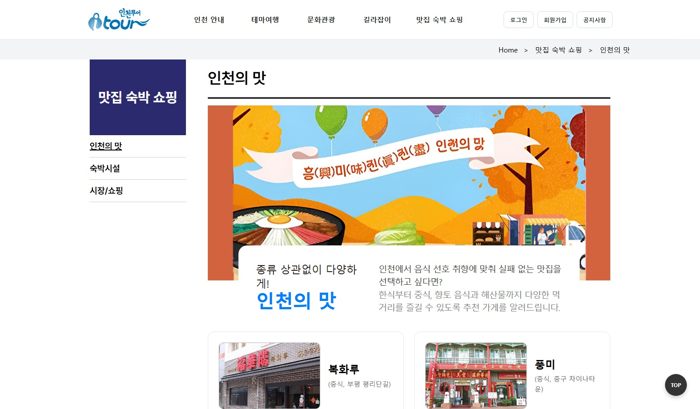
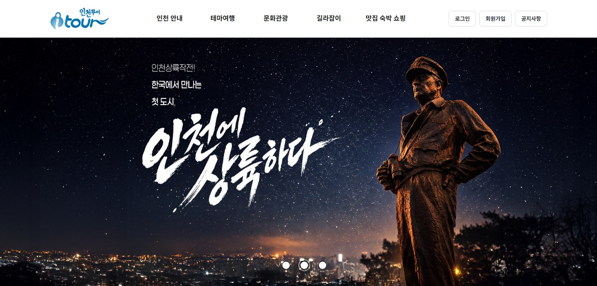
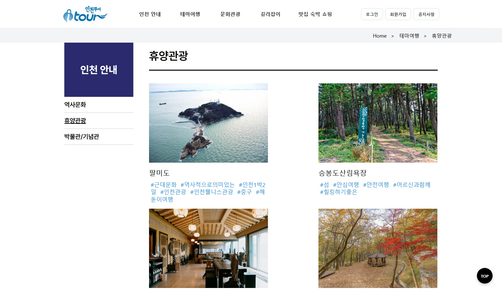
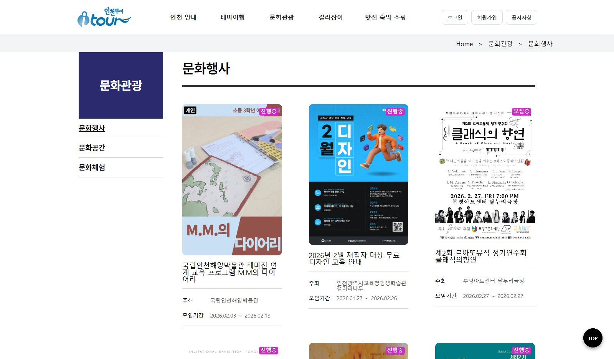
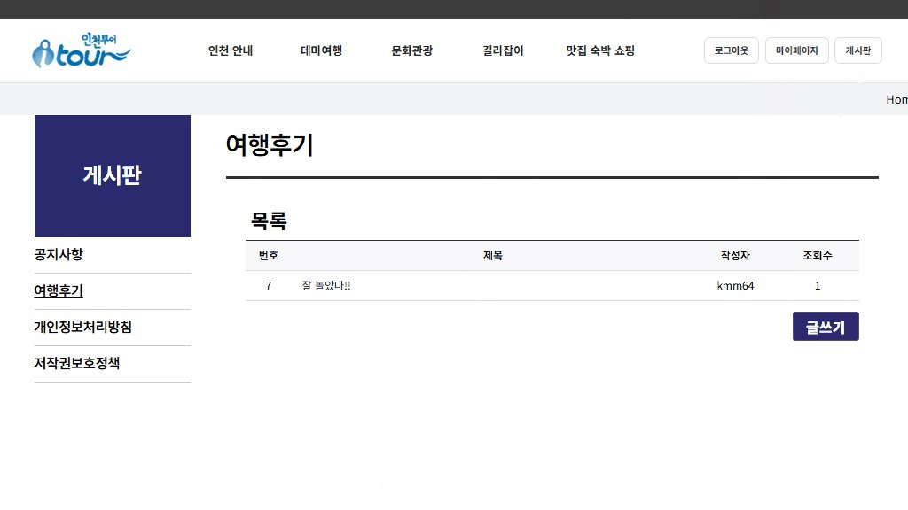

팀 프로젝트
인천 문화관광 서비스
인천 관광지를 지역이나 테마별로 찾고 다녀온 곳의 후기를 나누는 서비스입니다.
- 맡은 일
- 팀장으로 지역별 목록과 테마별 목록을 잇는 공통 메뉴를 설계하고 관광지 목록 등 주요 화면을 구현했습니다.
- 확인한 결과
- 비회원으로 관광지를 찾고, 가입 후 후기를 작성하는 과정을 시험했습니다. 회원과 관리자의 메뉴도 각 계정에서 점검했습니다.


- 구분과 기간
- 팀 프로젝트 (2026.02.09~03.13)
- 사용 기술
 Spring Boot 3,
Spring Boot 3,  Thymeleaf,
Thymeleaf,  PostgreSQL,
PostgreSQL,  HTML5,
HTML5,  CSS, JavaScript,
CSS, JavaScript,  Docker
Docker
관광지 탐색과 여행 후기
역사문화 명소를 둘러보다 식당을 찾고 싶을 때 홈으로 돌아가지 않아도 되도록, 관광지 목록마다 같은 상단 메뉴를 뒀습니다. ‘테마여행’에서 ‘인천의 맛’이나 ‘문화행사’로 바로 이동할 수 있습니다.
관광 정보는 비회원도 자유롭게 둘러볼 수 있게 열어 뒀습니다. 여행 후기는 회원끼리 경험을 나누는 공간으로 정해, 로그인한 뒤에 읽고 쓸 수 있도록 했습니다.
관광지 탐색부터 여행 후기까지







